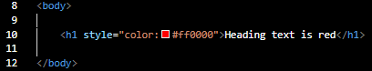
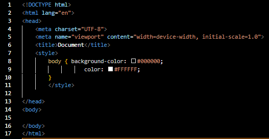
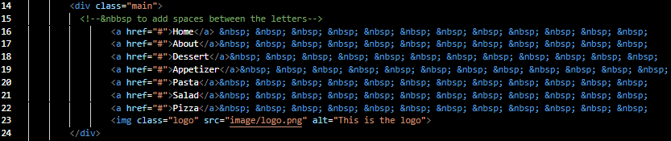
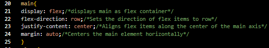
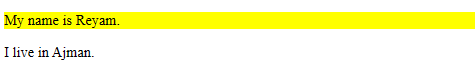
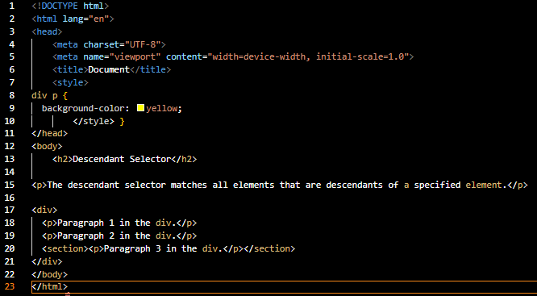
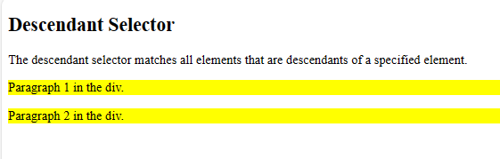
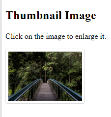

<h1 style="color: red"><The text goes here></h1>
Apply style only to the specific element
Input
Output
<head><style>body{background-color: black;
color: white;
}</style></head>
Applystyle to the entire web page document at the head element.
Input
Output
<head><link rel="stylesheet" href="style.css"></head>
Associate with a HTML link element in the head section of a web page
CSS selector
- class Selector
<div class="main"><The text goes here></div>
A class selector is denoted by a period (.) followed by the name of the class.
HTML
CSS

<div id="main"><The text goes here></div>
The id selector styles the element with the specified id.
Input

Output

<div ><The text goes here></div>
The descendant selector matches all elements that are descendants of a specified element.
Input
Output
CSS Tags
| Element | Meaning | Value |
|---|---|---|
| Color | This tag used to make color for the text | HEX, RGB, #00FF00 |
| background-color | This tag used to make color for full line of the text | HEX, RGB, #00FF00 |
| text-align | This tag used to move the text | center, left, right, justify |
| Font-family | This tag used to change the font of the text | ----, | Font-weight | The font-weight property sets how thick or thin characters in text should be displayed. | normal , bold, lighter, 800 |
| Font-size | The font-size property sets the size of the text. | 30px, 14px, 23 |
| Font-style | The font-style property sets the style of the text. | italic, normal, oblique |
| text-decoration | Sets the kind of text decoration to use | (like underline, overline, line-through) |
| Link | Links can be styled with any CSS property | (color, font-family, background, etc.). |
| border-radius property | Configures the horizontal radius and vertical radius of the corner | 15px, 20px, 30px...etc |
| opacity Property | Configure the opacity of the Element | from 0 to 1, 0 Completely Transparent |
| box-shadow Property | Configure the horizontal offset, vertical offset, blur radius,and valid color value | 15px, 20px, 30px...etc |
| Padding | Padding is used to create space around an element's content, inside of any defined borders. | |
| Horizontal Rule Element | Configures a horizontal line | |
| border | Configures a border on the top, right, bottom, and left sides of an element | 2px, 20px |
| border-style | Configures a style for the border | double, dotted...etc |
| border-color | Configures a color for the border | 00FF00, FF0000, 0000FF |
Types of boarder
- Block display element
- Inline display element
h2 {
border-color: blue
border-style: double
}/h2
Default width of element content extends to browser margin (or specified width)
Input

Output

Border closely outlines the element content
Input

Output

Thumbnail image
A small image configured to link to a larger version of that image.

